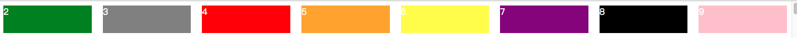
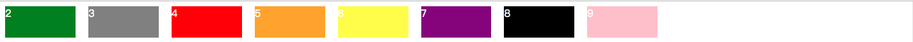
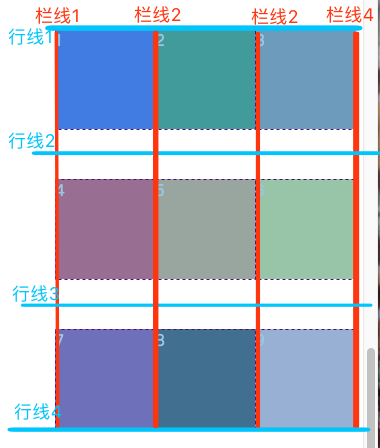

<!DOCTYPE html>
<html>
<head><meta name="generator" content="Hexo 3.8.0">
  <meta charset="utf-8">
  
  <title>grid 网格布局 | guowj</title>
  <meta name="viewport" content="width=device-width, initial-scale=1, maximum-scale=1">
  
  <meta name="keywords" content="CSSGrid网格布局响应式网页布局">
  
  
  
  
  <meta name="description" content="&amp;nbsp;&amp;nbsp;&amp;nbsp;&amp;nbsp;&amp;nbsp;&amp;nbsp;网页排版布局从最早的table,float,再到flexbox,都有很多限制，table主要是用来做表格的，float主要是用来解决浮动的，flexbox是一维布局，针对的是某一个轴线（横轴或纵轴）上的排列。而Grid是一个二维的布局，它将容器划分成行和列，产生一个个格子，再将一个个格子根据设计组成区块，它远比flexbox">
<meta name="keywords" content="CSS,Grid网格布局,响应式网页布局">
<meta property="og:type" content="article">
<meta property="og:title" content="Grid 网格布局">
<meta property="og:url" content="https://gwjacqueline.github.io/Grid-网格布局/index.html">
<meta property="og:site_name" content="guowj">
<meta property="og:description" content="&amp;nbsp;&amp;nbsp;&amp;nbsp;&amp;nbsp;&amp;nbsp;&amp;nbsp;网页排版布局从最早的table,float,再到flexbox,都有很多限制，table主要是用来做表格的，float主要是用来解决浮动的，flexbox是一维布局，针对的是某一个轴线（横轴或纵轴）上的排列。而Grid是一个二维的布局，它将容器划分成行和列，产生一个个格子，再将一个个格子根据设计组成区块，它远比flexbox">
<meta property="og:locale" content="zh-CN">
<meta property="og:image" content="https://gwjacqueline.github.io/images/auto-fit.png">
<meta property="og:image" content="https://gwjacqueline.github.io/images/auto-fill.png">
<meta property="og:image" content="https://gwjacqueline.github.io/images/gridLine.png">
<meta property="og:updated_time" content="2019-06-10T07:37:04.000Z">
<meta name="twitter:card" content="summary">
<meta name="twitter:title" content="Grid 网格布局">
<meta name="twitter:description" content="&amp;nbsp;&amp;nbsp;&amp;nbsp;&amp;nbsp;&amp;nbsp;&amp;nbsp;网页排版布局从最早的table,float,再到flexbox,都有很多限制，table主要是用来做表格的，float主要是用来解决浮动的，flexbox是一维布局，针对的是某一个轴线（横轴或纵轴）上的排列。而Grid是一个二维的布局，它将容器划分成行和列，产生一个个格子，再将一个个格子根据设计组成区块，它远比flexbox">
<meta name="twitter:image" content="https://gwjacqueline.github.io/images/auto-fit.png">
  
    <link rel="alternate" href="/atom.xml" title="guowj" type="application/atom+xml">
  

  

  <link rel="icon" href="/css/images/mylogo.png">
  <link rel="apple-touch-icon" href="/css/images/mylogo.png">
  
    <link href="//fonts.googleapis.com/css?family=Source+Code+Pro" rel="stylesheet" type="text/css">
  
  <link href="https://fonts.googleapis.com/css?family=Open+Sans|Montserrat:700" rel="stylesheet" type="text/css">
  <link href="https://fonts.googleapis.com/css?family=Roboto:400,300,300italic,400italic" rel="stylesheet" type="text/css">
  <link href="//netdna.bootstrapcdn.com/font-awesome/4.0.3/css/font-awesome.css" rel="stylesheet">
  <style type="text/css">
    @font-face{font-family:futura-pt; src:url("../css/fonts/FuturaPTBold.otf") format("woff");font-weight:500;font-style:normal;}
    @font-face{font-family:futura-pt-light; src:url("../css/fonts/FuturaPTBook.otf") format("woff");font-weight:lighter;font-style:normal;}
    @font-face{font-family:futura-pt-italic; src:url("../css/fonts/FuturaPTBookOblique.otf") format("woff");font-weight:400;font-style:italic;}
}

  </style>
  <link rel="stylesheet" href="/css/style.css">

  <script src="/js/jquery-3.1.1.min.js"></script>
  <script src="/js/bootstrap.js"></script>

  <!-- Bootstrap core CSS -->
  <link rel="stylesheet" href="/css/bootstrap.css">

  
    <link rel="stylesheet" href="/css/dialog.css">
  

  

  
    <link rel="stylesheet" href="/css/header-post.css">
  

  
  
  
    <link rel="stylesheet" href="/css/vdonate.css">
  

</head>
</html>


  <body data-spy="scroll" data-target="#toc" data-offset="50">


  
  <div id="container">
    <div id="wrap">
      
        <header>

    <div id="allheader" class="navbar navbar-default navbar-static-top" role="navigation">
        <div class="navbar-inner">
          
          <div class="container"> 
            <button type="button" class="navbar-toggle" data-toggle="collapse" data-target=".navbar-collapse">
              <span class="sr-only">Toggle navigation</span>
              <span class="icon-bar"></span>
              <span class="icon-bar"></span>
              <span class="icon-bar"></span>
            </button>

            
              <a class="brand" style="
                 margin-top: 0px;" href="#" data-toggle="modal" data-target="#myModal">
                  
              </a>
            
            
            <div class="navbar-collapse collapse">
              <ul class="hnav navbar-nav">
                
                  <li> <a class="main-nav-link" href="/">首页</a> </li>
                
                  <li> <a class="main-nav-link" href="/archives">归档</a> </li>
                
                  <li> <a class="main-nav-link" href="/categories">分类</a> </li>
                
                  <li> <a class="main-nav-link" href="/tags">标签</a> </li>
                
                  <li><div id="search-form-wrap">

    <form class="search-form">
        <input type="text" class="ins-search-input search-form-input" placeholder>
        <button type="submit" class="search-form-submit"></button>
    </form>
    <div class="ins-search">
    <div class="ins-search-mask"></div>
    <div class="ins-search-container">
        <div class="ins-input-wrapper">
            <input type="text" class="ins-search-input" placeholder="请输入关键词...">
            <span class="ins-close ins-selectable"><i class="fa fa-times-circle"></i></span>
        </div>
        <div class="ins-section-wrapper">
            <div class="ins-section-container"></div>
        </div>
    </div>
</div>
<script>
(function (window) {
    var INSIGHT_CONFIG = {
        TRANSLATION: {
            POSTS: '文章',
            PAGES: '页面',
            CATEGORIES: '分类',
            TAGS: '标签',
            UNTITLED: '(无标题)',
        },
        ROOT_URL: '/',
        CONTENT_URL: '/content.json',
    };
    window.INSIGHT_CONFIG = INSIGHT_CONFIG;
})(window);
</script>
<script src="/js/insight.js"></script>

</div></li>
            </ul></div>
          </div>
                
      </div>
    </div>

</header>


      
            
      <div id="content" class="outer">
        
          <section id="main" style="float:none;"><article id="post-Grid-网格布局" style="width: 75%; float:left;" class="article article-type-post" itemscope itemprop="blogPost">
  <div id="articleInner" class="article-inner">
    
    
      <header class="article-header">
        
  
    <h1 class="thumb" itemprop="name">
      Grid 网格布局
    </h1>
  

      </header>
    
    <div class="article-meta">
      
	<a href="/Grid-网格布局/" class="article-date">
	  <time datetime="2019-05-04T02:32:25.000Z" itemprop="datePublished">2019-05-04</time>
	</a>

      
    <a class="article-category-link" href="/categories/CSS/">CSS</a>

      
	<a class="article-views">
	<span id="busuanzi_container_page_pv">
		阅读量<span id="busuanzi_value_page_pv"></span>
	</span>
	</a>

      

    </div>
    <div class="article-entry" itemprop="articleBody">
      
        <blockquote>
<p>&nbsp;&nbsp;&nbsp;&nbsp;&nbsp;&nbsp;网页排版布局从最早的<code>table</code>,<code>float</code>,再到<code>flexbox</code>,都有很多限制，<code>table</code>主要是用来做表格的，<code>float</code>主要是用来解决浮动的，<code>flexbox</code>是一维布局，针对的是某一个轴线（横轴或纵轴）上的排列。而<code>Grid</code>是一个二维的布局，它将容器划分成行和列，产生一个个格子，再将一个个格子根据设计组成区块，它远比<code>flexbox</code>强大的多，也让网页布局设计变得更加简单。网格可以分为两类。一类是我们主动去定义的，比如定义了一个两行三列的表格，那么这 6 个格子就叫显性网格。另一类是系统自动产生的，比如定义了一个两行三列的表格，可是总共有 9 个格子，那么后面 3 个就叫隐性网格。接下来我将从显性网格和隐性网格这两大类去简单记录下 CSS 网格布局</p>
</blockquote>
<a id="more"></a>
<h2 id="显性网格"><a href="#显性网格" class="headerlink" title="显性网格"></a>显性网格</h2><h3 id="建立网格"><a href="#建立网格" class="headerlink" title="建立网格"></a>建立网格</h3><p>1.让指定的容器(container)采用网格布局，这样直属的所有元素都会变成该网格的单元(item)</p>
<figure class="highlight plain"><table><tr><td class="gutter"><pre><span class="line">1</span><br></pre></td><td class="code"><pre><span class="line">display:grid;</span><br></pre></td></tr></table></figure>
<p>如果需要设置为行内网格，则使用：</p>
<figure class="highlight plain"><table><tr><td class="gutter"><pre><span class="line">1</span><br></pre></td><td class="code"><pre><span class="line">display:inline-grid;</span><br></pre></td></tr></table></figure>
<p>2.为指定的容器(container)设置栏数(column)与行数(row)</p>
<figure class="highlight plain"><table><tr><td class="gutter"><pre><span class="line">1</span><br><span class="line">2</span><br><span class="line">3</span><br><span class="line">4</span><br></pre></td><td class="code"><pre><span class="line">/* 设置栏三等分，每一栏为1fr */</span><br><span class="line">grid-template-columns: 1fr 1fr 1fr;</span><br><span class="line">/* 设置第一行为50px,第二行为100px,第三行也为50px,除了使用绝对单位，也可以使用百分比 */</span><br><span class="line">grid-template-rows: 50px 100px 50px;</span><br></pre></td></tr></table></figure>
<h4 id="repeat"><a href="#repeat" class="headerlink" title="repeat()"></a>repeat()</h4><p>有时，写很多重复的数字会显得代码很冗余。当多次重复同样的大小时，可以使用<code>repeat</code>。它接受两个参数，第一个是重复的次数，第二个是大小。比如：</p>
<figure class="highlight plain"><table><tr><td class="gutter"><pre><span class="line">1</span><br><span class="line">2</span><br></pre></td><td class="code"><pre><span class="line">//相当于grid-template-columns: 1fr 1fr 1fr;</span><br><span class="line">grid-template-columns: repeat(3,1fr);</span><br></pre></td></tr></table></figure>
<h4 id="minmax"><a href="#minmax" class="headerlink" title="minmax()"></a>minmax()</h4><p>当我们的大小不是一个确定的值，而是一个范围的时候，就可以使用<code>minmax</code>.它接受两个参数，分别为最小值和最大值。</p>
<figure class="highlight plain"><table><tr><td class="gutter"><pre><span class="line">1</span><br><span class="line">2</span><br></pre></td><td class="code"><pre><span class="line">//表示中间列宽不小于auto(表示浏览器自己决定长度)，不大于50%</span><br><span class="line">grid-template-columns: 200px minmax(auto, 50%) 200px;</span><br></pre></td></tr></table></figure>
<h4 id="auto-fill"><a href="#auto-fill" class="headerlink" title="auto-fill"></a>auto-fill</h4><p>有的时候，我们确定了单元格的大小，但是不确定容器的大小。只是希望每一行或者每一列容纳尽可能多的单元格，这个时候我们就需要使用<code>auto-fill</code>去自动填充。比如：</p>
<figure class="highlight plain"><table><tr><td class="gutter"><pre><span class="line">1</span><br></pre></td><td class="code"><pre><span class="line">grid-template-rows: repeat(auto-fill,50px);</span><br></pre></td></tr></table></figure>
<h4 id="auto-fit"><a href="#auto-fit" class="headerlink" title="auto-fit"></a>auto-fit</h4><p><code>auto-fit</code>和<code>auto-fill</code>类似，唯一的区别就是：当容器能容纳更多的单元时，<code>auto-fill</code>会增加空白栏，而<code>auto-fit</code>会将多余的宽度平均分给每一栏去撑满容器宽度。</p>
<figure class="highlight plain"><table><tr><td class="gutter"><pre><span class="line">1</span><br></pre></td><td class="code"><pre><span class="line">grid-template-columns: repeat(auto-fit,minmax(100px,1fr));</span><br></pre></td></tr></table></figure>
<p>下图是<code>auto-fit</code>的展示效果,多余的空间被平均分配给了每一栏</p>
<div align="center"><br>  <br></div>

<figure class="highlight plain"><table><tr><td class="gutter"><pre><span class="line">1</span><br></pre></td><td class="code"><pre><span class="line">grid-template-columns: repeat(auto-fill,minmax(100px,1fr));</span><br></pre></td></tr></table></figure>
<p>下图是<code>auto-fill</code>的展示效果，自动产生了空白栏来填补多余的空间</p>
<div align="center"><br>  <br></div>

<h3 id="设置间隔"><a href="#设置间隔" class="headerlink" title="设置间隔"></a>设置间隔</h3><p>设置行与行的间隔</p>
<figure class="highlight plain"><table><tr><td class="gutter"><pre><span class="line">1</span><br></pre></td><td class="code"><pre><span class="line">grid-row-gap: 10px;</span><br></pre></td></tr></table></figure>
<p>设置栏与栏的间隔</p>
<figure class="highlight plain"><table><tr><td class="gutter"><pre><span class="line">1</span><br></pre></td><td class="code"><pre><span class="line">grid-column-gap: 10px;</span><br></pre></td></tr></table></figure>
<p>合并写法:第一个是行，第二个是栏</p>
<figure class="highlight plain"><table><tr><td class="gutter"><pre><span class="line">1</span><br></pre></td><td class="code"><pre><span class="line">grid-gap: 10px 20px;</span><br></pre></td></tr></table></figure>
<h3 id="网格线"><a href="#网格线" class="headerlink" title="网格线"></a>网格线</h3><p>网格线分为水平网格线和垂直网格线。水平网格线划分出行，垂直网格线划分出列。正常情况下，栏线总是比栏数多一，同样的，行线也比行数多一。<br>下图是一个 3*3 的网格，总共有 4 根栏线和 4 根行线。</p>
<div align="center"><br>  <br></div>

<h4 id="网格线的命名"><a href="#网格线的命名" class="headerlink" title="网格线的命名"></a>网格线的命名</h4><figure class="highlight plain"><table><tr><td class="gutter"><pre><span class="line">1</span><br><span class="line">2</span><br><span class="line">3</span><br></pre></td><td class="code"><pre><span class="line">grid-template-columns:[c1] 100px [c2] 200px [c3] 300px [c4];</span><br><span class="line">//同一条线可以有多个名字，用空格隔开</span><br><span class="line">grid-template-rows:[r1 r1-front] 50px [r2 r1-back] 60px [r3]</span><br></pre></td></tr></table></figure>
<p><strong>这里需要注意的是：名称不能与 css 的保留字相同</strong></p>
<h3 id="定位以及合并单元格"><a href="#定位以及合并单元格" class="headerlink" title="定位以及合并单元格"></a>定位以及合并单元格</h3><h4 id="定位"><a href="#定位" class="headerlink" title="定位"></a>定位</h4><p>我们可以通过网格线将指定的单元格放到容器中指定的位置。比如，将 9 宫格的第一个单元放到最中间的单元格</p>
<figure class="highlight plain"><table><tr><td class="gutter"><pre><span class="line">1</span><br><span class="line">2</span><br><span class="line">3</span><br><span class="line">4</span><br><span class="line">5</span><br><span class="line">6</span><br></pre></td><td class="code"><pre><span class="line">/* 网格线中栏的起始位置从2到3*/</span><br><span class="line">grid-column-start: 2;</span><br><span class="line">grid-column-end: 3;</span><br><span class="line">/* 网格线中行的起始位置从2到3*/</span><br><span class="line">grid-row-start: 2;</span><br><span class="line">grid-row-end: 3;</span><br></pre></td></tr></table></figure>
<p>这样就成功将第一个单元放到了最中间单元格的位置上。其他单元则会顺移一个位置。合并写法：</p>
<figure class="highlight plain"><table><tr><td class="gutter"><pre><span class="line">1</span><br><span class="line">2</span><br></pre></td><td class="code"><pre><span class="line">grid-column: 2/3;</span><br><span class="line">grid-row: 2/3;</span><br></pre></td></tr></table></figure>
<h4 id="合并单元格及堆叠问题"><a href="#合并单元格及堆叠问题" class="headerlink" title="合并单元格及堆叠问题"></a>合并单元格及堆叠问题</h4><p>我们可以通过网格线进行单元格的合并</p>
<figure class="highlight plain"><table><tr><td class="gutter"><pre><span class="line">1</span><br><span class="line">2</span><br></pre></td><td class="code"><pre><span class="line">grid-column:1/3;</span><br><span class="line">grid-row:1/3;</span><br></pre></td></tr></table></figure>
<p>如果碰到两个单元格合并导致的堆叠问题，可以使用<code>z-index</code>解决。<code>z-index</code>默认为 0，数字越大，层级越高。</p>
<h3 id="网格区域"><a href="#网格区域" class="headerlink" title="网格区域"></a>网格区域</h3><p>网格布局可以通过<code>grid-template-areas</code>去指定区域。比如我们可以在页面上指定一个页首、内容部分(左右布局)和页尾这样一个常用布局。</p>
<figure class="highlight plain"><table><tr><td class="gutter"><pre><span class="line">1</span><br><span class="line">2</span><br><span class="line">3</span><br><span class="line">4</span><br></pre></td><td class="code"><pre><span class="line">grid-template-areas:</span><br><span class="line">        &apos;header header&apos;</span><br><span class="line">        &apos;main aside&apos;</span><br><span class="line">        &apos;footer footer&apos;</span><br></pre></td></tr></table></figure>
<p>以上的代码先划分出了单元格，其中重复的部分，就是合并单元格。相当于划分出了<code>header</code>、<code>main</code>、<code>aside</code>、<code>footer</code>四个区域。<br><strong>这里需要注意的是：区域的命名会影响到网格线的名字。每个区域起始位置的栏线和行线都叫做<code>区域名-start</code>,终止区域的栏线和行线都叫做<code>区域名-end</code></strong><br>我们可以通过<code>grid-area</code>给指定元素占据<code>grid-template-areas</code>中指定区域的位置。比如：</p>
<figure class="highlight plain"><table><tr><td class="gutter"><pre><span class="line">1</span><br><span class="line">2</span><br><span class="line">3</span><br></pre></td><td class="code"><pre><span class="line">#header&#123;</span><br><span class="line">    grid-area: header;</span><br><span class="line">&#125;</span><br></pre></td></tr></table></figure>
<p>相当于：</p>
<figure class="highlight plain"><table><tr><td class="gutter"><pre><span class="line">1</span><br><span class="line">2</span><br><span class="line">3</span><br><span class="line">4</span><br></pre></td><td class="code"><pre><span class="line">#header&#123;</span><br><span class="line">    grid-column:header;</span><br><span class="line">    grid-row:header;</span><br><span class="line">&#125;</span><br></pre></td></tr></table></figure>
<p>如果没有指定区域，可以使用<code>grid-auto-flow</code>属性，容器的子元素会按照顺序默认放置在每个网格中，默认是<strong>先行后列</strong>。</p>
<figure class="highlight plain"><table><tr><td class="gutter"><pre><span class="line">1</span><br></pre></td><td class="code"><pre><span class="line">grid-auto-flow:row;</span><br></pre></td></tr></table></figure>
<ul><br><li><code>column</code>:先列后行</li><br><li><code>row dense</code>:先行后列，尽量不出现空格</li><br><li><code>column dense</code>:先列后行，尽量不出现空格</li><br></ul>

<h3 id="对齐设定"><a href="#对齐设定" class="headerlink" title="对齐设定"></a>对齐设定</h3><p>通过<code>justify-items</code>和<code>align-items</code>分别对网格中的单元格进行水平方向和垂直方向的对齐。<br>他们有以下几种常用值设定：</p>
<figure class="highlight plain"><table><tr><td class="gutter"><pre><span class="line">1</span><br><span class="line">2</span><br><span class="line">3</span><br><span class="line">4</span><br></pre></td><td class="code"><pre><span class="line">.container&#123;</span><br><span class="line">    justify-items: start | end | center | stretch | space-around | space-between | space-evenly;</span><br><span class="line">    align-items: start | end | center | stretch | space-around | space-between | space-evenly;</span><br><span class="line">&#125;</span><br></pre></td></tr></table></figure>
<p>或者可以简写为：</p>
<figure class="highlight plain"><table><tr><td class="gutter"><pre><span class="line">1</span><br><span class="line">2</span><br><span class="line">3</span><br></pre></td><td class="code"><pre><span class="line">.container&#123;</span><br><span class="line">    place-items: &lt;align-items&gt; &lt;justify-items&gt;;</span><br><span class="line">&#125;</span><br></pre></td></tr></table></figure>
<ul><br>    <li><code>start</code>:在水平方向靠左，在垂直方向靠上</li><br>    <li><code>end</code>:在水平方向靠右，在垂直方向靠下</li><br>    <li><code>center</code>:居中</li><br>    <li><code>stretch</code>:拉伸，占满单元格的整个宽度</li><br>    <li><code>space-around</code>:将多余的空间放在单元格左右/上下两边</li><br>    <li><code>space-between</code>:将多余的空间放在单元格中间</li><br>    <li><code>space-between</code>:将多余的空间平均分给全部单元格</li><br></ul>

<h2 id="隐性网格"><a href="#隐性网格" class="headerlink" title="隐性网格"></a>隐性网格</h2><p>当一些不在我们预设范围内的网格，我们看看通过什么属性进行设置吧~</p>
<h3 id="预设行高、栏宽以及排列方式"><a href="#预设行高、栏宽以及排列方式" class="headerlink" title="预设行高、栏宽以及排列方式"></a>预设行高、栏宽以及排列方式</h3><p>预设行高和栏宽</p>
<figure class="highlight plain"><table><tr><td class="gutter"><pre><span class="line">1</span><br><span class="line">2</span><br></pre></td><td class="code"><pre><span class="line">grid-auto-rows: 200px;</span><br><span class="line">grid-auto-columns: 2fr;</span><br></pre></td></tr></table></figure>
<p>预设单元格排列默认是：</p>
<figure class="highlight plain"><table><tr><td class="gutter"><pre><span class="line">1</span><br></pre></td><td class="code"><pre><span class="line">grid-auto-flow:row;</span><br></pre></td></tr></table></figure>
<p>在预设的情况下，单元格会默认先排满第一行，再排满第二行以此类推。我们可以改成以栏为主：</p>
<figure class="highlight plain"><table><tr><td class="gutter"><pre><span class="line">1</span><br></pre></td><td class="code"><pre><span class="line">grid-auto-flow:column;</span><br></pre></td></tr></table></figure>
<p>具体的兼容性可以查看<a href="https://caniuse.com/#feat=css-grid" target="_blank" rel="noopener">这里</a>,具体参考文章：<a href="https://www.smashingmagazine.com/2017/11/css-grid-supporting-browsers-without-grid/?utm_source=SitePoint&amp;utm_medium=email&amp;utm_campaign=Versioning" target="_blank" rel="noopener">文章 1</a>、<a href="https://www.w3schools.com/css/css_grid.asp" target="_blank" rel="noopener">文章 2</a>、<a href="https://developer.mozilla.org/zh-CN/docs/Web/CSS/grid" target="_blank" rel="noopener">文章 3</a>、<a href="http://www.ruanyifeng.com/blog/2019/03/grid-layout-tutorial.html" target="_blank" rel="noopener">文章 4</a>、<a href="https://zacklive.com/css-grid-intro/" target="_blank" rel="noopener">文章 5</a>、<a href="https://juejin.im/post/5a3f494d6fb9a0450a678f8d" target="_blank" rel="noopener">文章 6</a>。</p>

      
    </div>
    <footer class="article-footer">
      
        <div id="donation_div"></div>

<script src="/js/vdonate.js"></script>
<script>
var a = new Donate({
  title: '如果觉得我的文章对您有用，请随意打赏。您的支持将鼓励我继续创作!', // 可选参数，打赏标题
  btnText: '打赏支持', // 可选参数，打赏按钮文字
  el: document.getElementById('donation_div'),
  wechatImage: '../images/wx.jpeg',
  alipayImage: '../images/zfb.jpg'
});
</script>
      
      
      <div>
        <ul class="post-copyright">
          <li class="post-copyright-author">
          <strong>本文作者:  </strong>guowj
          </li>
          <li class="post-copyright-link">
          <strong>本文链接:  </strong>
          <a href="/Grid-网格布局/" target="_blank" title="Grid 网格布局">https://gwjacqueline.github.io/Grid-网格布局/</a>
          </li>
          <li class="post-copyright-license">
            <strong>版权声明:   </strong>
            本博客所有文章除特别声明外，均采用 <a rel="license" href="https://creativecommons.org/licenses/by-nc-nd/4.0/" target="_blank" title="Attribution-NonCommercial-NoDerivatives 4.0 International (CC BY-NC-ND 4.0)">CC BY-NC-ND 4.0</a>
            许可协议。转载请注明出处
          </li>
         
        </ul>
<div>
</div></div>
      
      
        
	<div id="comment">
		<!-- 来必力City版安装代码 -->
		<div id="lv-container" data-id="city" data-uid="MTAyMC80MzU1OS8yMDA5OA==" ">
		<script type="text/javascript">
		   (function(d, s) {
		       var j, e = d.getElementsByTagName(s)[0];

		       if (typeof LivereTower === 'function') { return; }

		       j = d.createElement(s);
		       j.src = 'https://cdn-city.livere.com/js/embed.dist.js';
		       j.async = true;

		       e.parentNode.insertBefore(j, e);
		   })(document, 'script');
		</script>
		<noscript>为正常使用来必力评论功能请激活JavaScript</noscript>
		</div>
		<!-- City版安装代码已完成 -->
	</div>


      
      
        
  <ul class="article-tag-list"><li class="article-tag-list-item"><a class="article-tag-list-link" href="/tags/CSS/">CSS</a></li><li class="article-tag-list-item"><a class="article-tag-list-link" href="/tags/Grid网格布局/">Grid网格布局</a></li><li class="article-tag-list-item"><a class="article-tag-list-link" href="/tags/响应式网页布局/">响应式网页布局</a></li></ul>

      

    </footer>
  </div>
  
    
<nav id="article-nav">
  
    <a href="/走进Webpack的大门/" id="article-nav-newer" class="article-nav-link-wrap">
      <strong class="article-nav-caption">上一篇</strong>
      <div class="article-nav-title">
        
          走进Webpack的大门
        
      </div>
    </a>
  
  
    <a href="/移动端常见兼容性问题(二)/" id="article-nav-older" class="article-nav-link-wrap">
      <strong class="article-nav-caption">下一篇</strong>
      <div class="article-nav-title">移动端常见兼容性问题(二)</div>
    </a>
  
</nav>

  
</article>

<!-- Table of Contents -->

  <aside id="toc-sidebar">
    <div id="toc" class="toc-article">
    <strong class="toc-title">文章目录</strong>
    
        <ol class="nav"><li class="nav-item nav-level-2"><a class="nav-link" href="#显性网格"><span class="nav-number">1.</span> <span class="nav-text">显性网格</span></a><ol class="nav-child"><li class="nav-item nav-level-3"><a class="nav-link" href="#建立网格"><span class="nav-number">1.1.</span> <span class="nav-text">建立网格</span></a><ol class="nav-child"><li class="nav-item nav-level-4"><a class="nav-link" href="#repeat"><span class="nav-number">1.1.1.</span> <span class="nav-text">repeat()</span></a></li><li class="nav-item nav-level-4"><a class="nav-link" href="#minmax"><span class="nav-number">1.1.2.</span> <span class="nav-text">minmax()</span></a></li><li class="nav-item nav-level-4"><a class="nav-link" href="#auto-fill"><span class="nav-number">1.1.3.</span> <span class="nav-text">auto-fill</span></a></li><li class="nav-item nav-level-4"><a class="nav-link" href="#auto-fit"><span class="nav-number">1.1.4.</span> <span class="nav-text">auto-fit</span></a></li></ol></li><li class="nav-item nav-level-3"><a class="nav-link" href="#设置间隔"><span class="nav-number">1.2.</span> <span class="nav-text">设置间隔</span></a></li><li class="nav-item nav-level-3"><a class="nav-link" href="#网格线"><span class="nav-number">1.3.</span> <span class="nav-text">网格线</span></a><ol class="nav-child"><li class="nav-item nav-level-4"><a class="nav-link" href="#网格线的命名"><span class="nav-number">1.3.1.</span> <span class="nav-text">网格线的命名</span></a></li></ol></li><li class="nav-item nav-level-3"><a class="nav-link" href="#定位以及合并单元格"><span class="nav-number">1.4.</span> <span class="nav-text">定位以及合并单元格</span></a><ol class="nav-child"><li class="nav-item nav-level-4"><a class="nav-link" href="#定位"><span class="nav-number">1.4.1.</span> <span class="nav-text">定位</span></a></li><li class="nav-item nav-level-4"><a class="nav-link" href="#合并单元格及堆叠问题"><span class="nav-number">1.4.2.</span> <span class="nav-text">合并单元格及堆叠问题</span></a></li></ol></li><li class="nav-item nav-level-3"><a class="nav-link" href="#网格区域"><span class="nav-number">1.5.</span> <span class="nav-text">网格区域</span></a></li><li class="nav-item nav-level-3"><a class="nav-link" href="#对齐设定"><span class="nav-number">1.6.</span> <span class="nav-text">对齐设定</span></a></li></ol></li><li class="nav-item nav-level-2"><a class="nav-link" href="#隐性网格"><span class="nav-number">2.</span> <span class="nav-text">隐性网格</span></a><ol class="nav-child"><li class="nav-item nav-level-3"><a class="nav-link" href="#预设行高、栏宽以及排列方式"><span class="nav-number">2.1.</span> <span class="nav-text">预设行高、栏宽以及排列方式</span></a></li></ol></li></ol>
    
    </div>
  </aside>

</section>
        
      </div>
      
      <footer id="footer">
  

  <div class="container">
      	<div class="row">
	      <!--<p> Powered by <a href="http://hexo.io/" target="_blank">Hexo</a> and <a href="https://github.com/iTimeTraveler/hexo-theme-hiker" target="_blank">Hexo-theme-hiker</a> </p>-->
	      <p id="copyRightEn">Copyright &copy;2019 guowj All Rights Reserved.</p>
	      
	      
    		<p class="busuanzi_uv">
				访客数 : <span id="busuanzi_value_site_uv"></span> |  
				访问量 : <span id="busuanzi_value_site_pv"></span>
		    </p>
  		   
		</div>

		
  </div>
</footer>


<!-- min height -->

<script>
    var wrapdiv = document.getElementById("wrap");
    var contentdiv = document.getElementById("content");
    var allheader = document.getElementById("allheader");

    wrapdiv.style.minHeight = document.body.offsetHeight + "px";
    if (allheader != null) {
      contentdiv.style.minHeight = document.body.offsetHeight - allheader.offsetHeight - document.getElementById("footer").offsetHeight + "px";
    } else {
      contentdiv.style.minHeight = document.body.offsetHeight - document.getElementById("footer").offsetHeight + "px";
    }
</script>
    </div>
    <!-- <nav id="mobile-nav">
  
    <a href="/" class="mobile-nav-link">Home</a>
  
    <a href="/archives" class="mobile-nav-link">Archives</a>
  
    <a href="/categories" class="mobile-nav-link">Categories</a>
  
    <a href="/tags" class="mobile-nav-link">Tags</a>
  
</nav> -->
    

<!-- mathjax config similar to math.stackexchange -->

<script type="text/x-mathjax-config">
  MathJax.Hub.Config({
    tex2jax: {
      inlineMath: [ ['$','$'], ["\\(","\\)"] ],
      processEscapes: true
    }
  });
</script>

<script type="text/x-mathjax-config">
    MathJax.Hub.Config({
      tex2jax: {
        skipTags: ['script', 'noscript', 'style', 'textarea', 'pre', 'code']
      }
    });
</script>

<script type="text/x-mathjax-config">
    MathJax.Hub.Queue(function() {
        var all = MathJax.Hub.getAllJax(), i;
        for(i=0; i < all.length; i += 1) {
            all[i].SourceElement().parentNode.className += ' has-jax';
        }
    });
</script>

<script type="text/javascript" src="https://cdnjs.cloudflare.com/ajax/libs/mathjax/2.7.1/MathJax.js?config=TeX-AMS-MML_HTMLorMML">
</script>


  <link rel="stylesheet" href="/fancybox/jquery.fancybox.css">
  <script src="/fancybox/jquery.fancybox.pack.js"></script>


<script src="/js/scripts.js"></script>


  <script src="/js/dialog.js"></script>


	<div style="display: none;">
    <script src="https://s95.cnzz.com/z_stat.php?id=1260716016&web_id=1260716016" language="JavaScript"></script>
  </div>


	<script async src="//busuanzi.ibruce.info/busuanzi/2.3/busuanzi.pure.mini.js">
	</script>


  </div>

  <div class="modal fade" id="myModal" tabindex="-1" role="dialog" aria-labelledby="myModalLabel" aria-hidden="true" style="display: none;">
  <div class="modal-dialog">
    <div class="modal-content">
      <div class="modal-header">
        <h2 class="modal-title" id="myModalLabel">设置</h2>
      </div>
      <hr style="margin-top:0px; margin-bottom:0px; width:80%; border-top: 3px solid #000;">
      <hr style="margin-top:2px; margin-bottom:0px; width:80%; border-top: 1px solid #000;">


      <div class="modal-body">
          <div style="margin:6px;">
            <a data-toggle="collapse" data-parent="#accordion" href="#collapseOne" onclick="javascript:setFontSize();" aria-expanded="true" aria-controls="collapseOne">
              正文字号大小
            </a>
          </div>
          <div id="collapseOne" class="panel-collapse collapse" role="tabpanel" aria-labelledby="headingOne">
          <div class="panel-body">
            您已调整页面字体大小
          </div>
        </div>
      


          <div style="margin:6px;">
            <a data-toggle="collapse" data-parent="#accordion" href="#collapseTwo" onclick="javascript:setBackground();" aria-expanded="true" aria-controls="collapseTwo">
              夜间护眼模式
            </a>
        </div>
          <div id="collapseTwo" class="panel-collapse collapse" role="tabpanel" aria-labelledby="headingTwo">
          <div class="panel-body">
            夜间模式已经开启，再次单击按钮即可关闭 
          </div>
        </div>

        <div>
            <a data-toggle="collapse" data-parent="#accordion" href="#collapseThree" aria-expanded="true" aria-controls="collapseThree">&nbsp;&nbsp;&nbsp;&nbsp;&nbsp;&nbsp;关 于&nbsp;&nbsp;&nbsp;&nbsp;&nbsp;&nbsp;</a>
        </div>
         <div id="collapseThree" class="panel-collapse collapse" role="tabpanel" aria-labelledby="headingThree">
          <div class="panel-body">
            guowj
          </div>
          <div class="panel-body">
            Copyright © 2019 guowj All Rights Reserved.
          </div>
        </div>
      </div>


      <hr style="margin-top:0px; margin-bottom:0px; width:80%; border-top: 1px solid #000;">
      <hr style="margin-top:2px; margin-bottom:0px; width:80%; border-top: 3px solid #000;">
      <div class="modal-footer">
        <button type="button" class="close" data-dismiss="modal" aria-label="Close"><span aria-hidden="true">×</span></button>
      </div>
    </div>
  </div>
</div>
  
  <a id="rocket" href="#top" class=""></a>
  <script type="text/javascript" src="/js/totop.js?v=1.0.0" async=""></script>
  
    <a id="menu-switch"><i class="fa fa-bars fa-lg"></i></a>
  
</body>
</html>